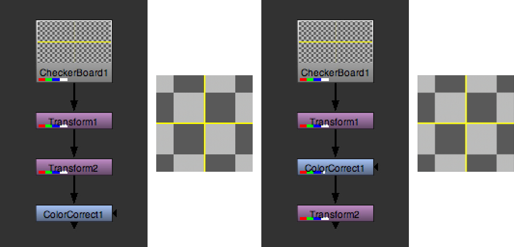
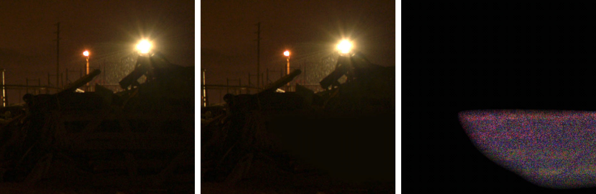

Visual Effects Quality Control Practices
Quote
"One unfortunate reality in film production is that the typical artist display is not as high fidelity as the eventual theatrical viewing environment; most often the theatrical audience will see more color detail than the original artist."
— Jeremy Selan, Sony Pictures Imageworks, Cinematic Color VES, 2012
One of the major tenets of visual effects is do no harm. This goes to say that visual effects work should always contribute a positive and productive effect to the final image, but not to the detriment of the image in any other way. Of course, we are not talking subjectively here, but rather on a technical/objective level.
Inexpertly composited visual effects can introduce unintended side effects that detract from an image's objective quality. These issues manifest themselves in a variety of ways and can stem from a number of potential mistakes in image processing before, during, and after compositing. Building and vetting a robust imaging pipeline is critical to preserving image integrity and fidelity.
This is often the job of the technical director (TD) at a visual effects studio. It is important to clearly define expected results early in pre-production. When all parties know what results are expected and what practices are being prescribed, and all follow those protocols, the result is a homogeneous and streamlined visual effects process.
On independent productions where there is no TD, these responsibilities often fall on the shoulders of the VFX supervisor or the lead VFX artist on the project. The production's resident imaging expert should define and vet the visual effects workflow and imaging pipeline to detect any weaknesses or points of failure prior to production. As issues arise, it is important for the VFX artists or vendors to establish dialogue with production to troubleshoot.
Image Processing Practices
Scaling Algorithms
Spatial scaling transformations result in the remapping of original pixel values to new positions in the image. Different scaling algorithms provide different solutions to where and how those values should be remapped and whether they should be smoothed and interpolated. Many issues can arise from using computationally "cheaper" scaling algorithms in compositing, such as aliased or jagged edges.
Impulse and nearest-neighbor scaling algorithms are prone to producing noticeable aliasing and distortion, but are computationally inexpensive.
Better, smoother scaling algorithms result in softer edges with fewer scaling artifacts, but are more computationally intensive.
Many scaling algorithms introduce a degree of sharpening to produce apparent resolution gain when positively scaling an image. Many of these filters (negative-lobed filters such as Rifman and Lanczos, for example) are prone to producing ringing artifacts in areas of high contrast. Many scaling operations produce major artifacts on floating-point images containing negative values.
Because of this, most scaling operations are best not performed in scene-linear. Even within applications like Nuke, which natively work in scene-linear, scaling operations take this into account and apply transfer functions to remap the image to a more suitable encoding prior to scaling, and then back to its original encoding without clamping.
This is worth considering when processing scene-linear visual effects pulls to OpenEXR, or when scaling scene-linear OpenEXR visual effects in a DI. If scaling is producing exceptional ringing artifacts, the software performing the scaling may not be de-linearizing automatically and a manual pre- and post-scaling conversion may be necessary. Any scaling being performed to resize the camera original image to the visual effects pull format should be performed in a logarithmic space rather than in scene-linear, even if the source and destination formats are scene-linear.
The same principles apply to titles and graphics compositing in a digital intermediate.
Concatenated Image Transforms
Many processes in compositing require complex image resizing and repositioning to achieve a desired result. This may involve multiple successive image transforms. Every time an image is resized or repositioned, some of the original image sharpness is degraded. After multiple successive transformations, the end result could be noticeably softer looking than the original plate.
For this reason, many compositing packages provide solutions that concatenate image transformations, essentially boiling down multiple successive transformations into a single net transformation operation. This is done behind the scenes, but there are many ways that an artist can break the concatenation, such as applying color correction processes or image shaders in between transform operations.
In the example below, Transform1 is scaling by a factor of 0.10 and Transform2 by 10.0, for a
net-zero scaling transform. In the example on the left the transforms are concatenated before
the ColorCorrect node, resulting in a color corrected image of the original net-zero transformed
image. On the right, the ColorCorrect node bisects the transforms and breaks the
concatenation. The result is an image with substantial loss of sharpness.

Transfer Functions
It is common for compositing to be performed in a working space other than the original plate or delivery-specified encoding(s). Strict color management throughout the compositing process is necessary to ensure that the final delivery is in the desired color space and that no loss of dynamic range has occurred. Compositing is often best performed in a scene-linear working space where math operations function predictably and linearly, rather than in a logarithmic or gamma-referred working environment.
Compositing packages like Foundry's Nuke are designed around compositing in a linear working space by applying floating-point transfer functions to pre-convert material from camera-native logarithmic encoding to scene-linear and then back to a chosen destination encoding on render. This all works because the transfer functions are mathematically reversible, are not "s-shaped" display-referred transforms, and are performed in high precision 32-bit float.
Other compositing packages1 coming from different pedigrees have different philosophies about desired working spaces and color management practices. Conducting end-to-end workflow tests in pre-production is paramount to identifying and resolving potential issues and deciding on a workflow that yields the best results.
Quality Control Practices
Instituting a personal practice of checking your own work is key to success. Nothing is more embarrassing than having to redeliver a shot because of a mistake that would have been caught in a simple review. Checking for render dropouts, matte edges, color shifts, and issues in file naming, numbering, and render formatting is important before any files are delivered to the production (or client). Major studios follow this practice in a hierarchical fashion, with the senior compositing supervisors and visual effects supervisors performing critical review of all artist-submitted shots in a theater or other calibrated screening environment. They may have software systems in place for detecting issues like missing frames, but a visual inspection is crucial for detecting compositing issues. They examine not only the composited area, but all areas of the frame for potential mistakes and side effects. Comparison of previous versions of the shot as well as the original plate is helpful in detecting and analyzing issues. Not only do they examine individual shots, but sequences as a whole, which are often produced through the talents of multiple artists. Making sure that comparable elements throughout a sequence match in continuity is critical to maintaining quality.
Many composited images look great when viewed in their target viewing space on the display they were composited on. However, those shots will ultimately undergo — sometimes significant — color grading and ultimately will be viewed on consumer displays under less than ideal conditions.2 Under those conditions, masks with unfeathered edges, differences in noise and grain patterns, and changes in shadow density and black points become significantly more apparent.
Any artist, regardless of project scale, can benefit from adopting many of these practices in their personal work.
Gamma Checking
A common and quick way to identify matte lines and issues in noise, grain, and black point matching is by simply increasing and decreasing the compositor's viewport gamma by a significant amount, much more than you would expect it to ever be viewed in. This is a common technique used by studio QC operators when checking a final deliverable before it is put into distribution.
Exposure Checking
Additionally, linear increases in exposure can provide artists with a sense of the real dynamic range of their image. Do artificial (composited or CGI) highlights clip or read at the same level as comparable highlights in the original plate? Do artificial shadows match the black point (color and value) of comparable shadows in the plate? How do these values compare within the shot and to other shots nearby?
Difference Checking
Performing a high-gain mathematical difference operation between a visual effects render and an original plate can reveal a variety of compositing issues that may not be visible to the naked eye, including matte lines, noise/grain patterns, tracking issues, and highlight/shadow compression or clamping.
